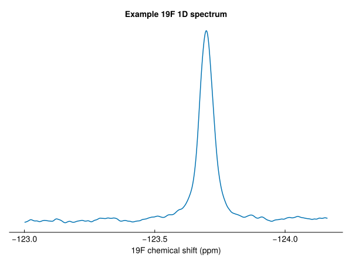
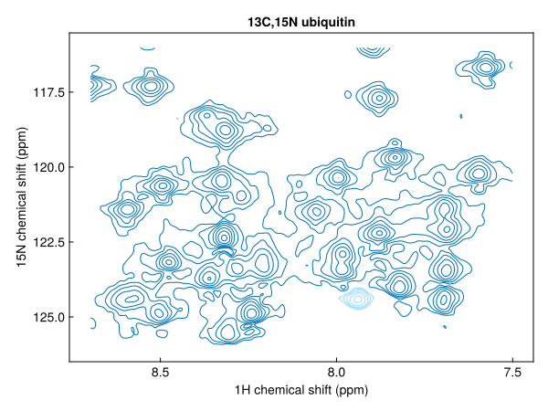
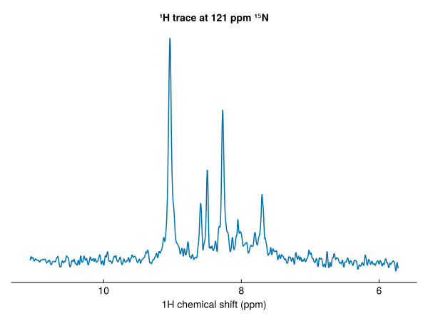
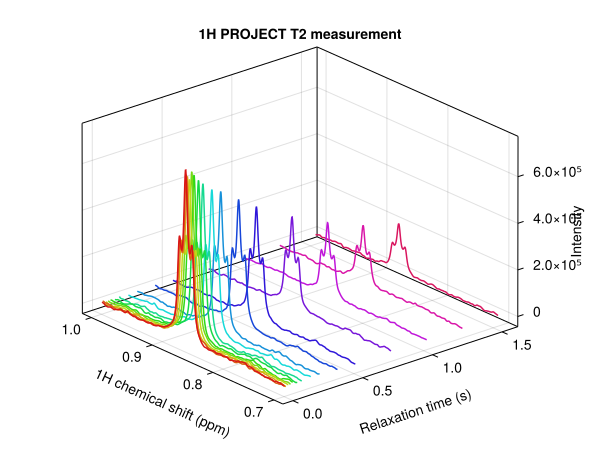
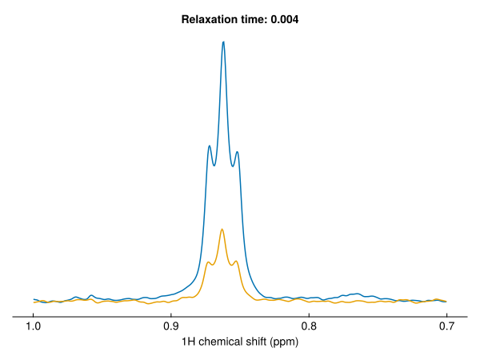
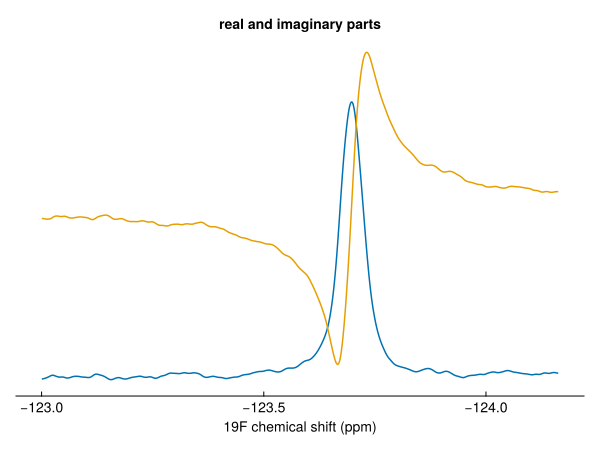
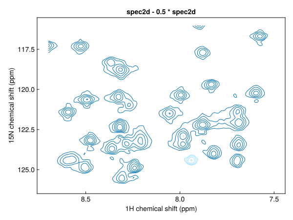

Working with spectra
NMR measurements are arrays of data with coordinates attached to each axis: chemical shifts, times, gradient strengths. NMRTools stores them as NMRData structures, which hold the data, the axes and metadata on acquisition and processing. This tutorial loads some spectra, takes them apart, and plots each piece along the way.
using NMRTools, CairoMakieLoading a spectrum
loadnmr loads processed data: a Bruker experiment folder, a pdata folder, an nmrPipe file or a UCSF file. Here we use the bundled example data:
spec = exampledata("1D_19F")exampledata(name; path=true) gives the folder the data were loaded from, which is what you would pass to loadnmr for your own data:
spec = loadnmr("path/to/experiment/1") # pdata/1 by default
spec = loadnmr("path/to/experiment/1/pdata/101") # another processed spectrumSee Load spectra for the other formats.
Indexing and selecting
An NMRData can be indexed like any Julia array:
spec[1000:1004]┌ 5-element NMRData{Float64, 1} ┐
├───────────────────────────────┴──────────────────────────────────────── dims ┐
↓ F1Dim Sampled{Float64} LinRange{Float64}(-120.50553264298081, -120.5091896305403, 5) ReverseOrdered Regular Points
├──────────────────────────────────────────────────────────────────── metadata ┤
Dict{Symbol, Any} with 19 entries:
:filename => "/home/runner/.julia/artifacts/8581f841a7ad0ab21edeb8fd0…
:channels => Dict{Symbol, Any}(:f1=>Dict{Symbol, Any}(:offsethz=>-611…
:label => "Example 19F 1D spectrum"
:ns => 64
:temperature => 318.151
:experimentfolder => "/home/runner/.julia/artifacts/8581f841a7ad0ab21edeb8fd0…
:pulseprogram => "zg"
:ndim => 1
:acqusfilename => "/home/runner/.julia/artifacts/8581f841a7ad0ab21edeb8fd0…
:title => "Example 19F 1D spectrum\nSample details in second line\…
:acqus => Dict{Symbol, Any}(:fcuchan=>Dict(0=>0, 4=>0, 5=>0, 6=>0,…
:field => 11.7461
:format => :pdata
:noise => 424.03
:solvent => "H2O+D2O"
:nuclei => Set(Nucleus[F19])
:topspin => v"3.2.0"
:date => DateTime("2017-08-07T07:08:12")
:rg => 76.02
└──────────────────────────────────────────────────────────────────────────────┘
⋮ ⋱ It can also be indexed by chemical shift, with the selectors Near(x) (the nearest point), At(x) (an exact match) and a .. b (everything between a and b):
spec[Near(-123.7)]23670.80059814453Selecting a range returns another NMRData, with its axis cut to match, so it can be plotted straight away:
region = spec[-124.5 .. -123]
fig = nmrplot(region)
The same works in two dimensions. A range in both dimensions gives a smaller 2D spectrum:
spec2d = exampledata("2D_HN")
fig = nmrplot(spec2d[7.5 .. 8.7, 116 .. 126])
while a single point in one dimension gives a 1D slice through the other:
slice = spec2d[:, Near(121.0)]
fig = nmrplot(slice; title="¹H trace at 121 ppm ¹⁵N")
Axes
The axes of a spectrum are its dimensions:
dims(spec2d)(↓ F1Dim Sampled{Float64} LinRange{Float64}(11.07119, 5.722488424064256, 1216) ReverseOrdered Regular Points,
→ F2Dim Sampled{Float64} LinRange{Float64}(128.9998, 107.04307400088886, 512) ReverseOrdered Regular Points)Each has a type that says what it measures: here F1Dim and F2Dim, the direct and indirect frequency dimensions. A dimension can be used like a vector of its coordinates, and data gives the plain numbers:
data(spec2d, F2Dim)[1:5]5-element LinRange{Float64, Int64}:
129.0, 128.957, 128.914, 128.871, 128.828data(spec2d) returns the plain matrix of intensities. See Dimensions for the full set of dimension types.
Series of spectra
A pseudo-2D experiment, such as a relaxation series, has a frequency dimension and a non-frequency dimension:
relax = exampledata("pseudo2D_T2")
dims(relax)(↓ F1Dim Sampled{Float64} LinRange{Float64}(14.61403, -5.213416036409748, 32768) ReverseOrdered Regular Points,
→ X2Dim Sampled{Int64} 1:16 ForwardOrdered Regular Points)The second dimension is loaded as X2Dim, an unknown non-frequency dimension. Once we know the relaxation delays (here 4 ms per loop of the vclist), setrelaxtimes replaces it with a TrelaxDim, and plots label it correctly:
relax = setrelaxtimes(relax, acqus(relax, :vclist) * 4e-3, "s")
fig = nmrplot(relax[0.7 .. 1.0, :]; style=:waterfall)
Each column is a 1D spectrum:
fig = nmrplot(relax[0.7 .. 1.0, 1])
nmrplot!(fig, relax[0.7 .. 1.0, end])
Real and imaginary parts
Processed spectra are loaded as real data by default. Pass allcomponents=true to load the imaginary parts too:
spec19f = loadnmr(exampledata("1D_19F"; path=true); allcomponents=true)
eltype(spec19f)Multicomplex{Float64, 1, 2}The element type is a first-order multicomplex number: a complex number whose imaginary unit is im1. real and imag give the two parts as real spectra:
region = spec19f[-124.5 .. -123]
fig, ax, _ = nmrplot(real.(region); title="real and imaginary parts")
nmrplot!(ax, imag.(region))
Multidimensional data have an imaginary unit for each dimension; see Multicomplex numbers and quadrature.
Arithmetic
Arithmetic works on NMRData as on any array, and keeps the axes and metadata:
halved = spec2d - 0.5 * spec2d
fig = nmrplot(halved[7.5 .. 8.7, 116 .. 126]; title="spec2d - 0.5 * spec2d")
Metadata
Metadata describe the experiment as a whole and each of its axes. Look up spectrum metadata with a key, and axis metadata with a dimension and a key:
spec2d[:ns], spec2d[:pulseprogram], spec2d[:temperature](2, "sfhmqcf3gpph.cw", 276.9988)spec2d[F1Dim, :nucleus], spec2d[F1Dim, :swppm](H1, 18.031507535006423)Acquisition parameters from the acqus files are read with acqus:
acqus(spec2d, :te), acqus(spec2d, :p, 1)(276.9988, 9.199999999999998e-6)Times are in seconds and frequencies in Hz. See Metadata for how metadata are organised, and Find acquisition parameters for more.
Saving
A processed spectrum can be written back as Bruker processed data, to view in TopSpin:
savenmr("path/to/experiment/1", spec; procno=101) # writes pdata/101Next steps
- Processing a 1D spectrum: from a raw FID to a spectrum
- Plot 1D spectra and Plot 2D spectra
- The NMRData model